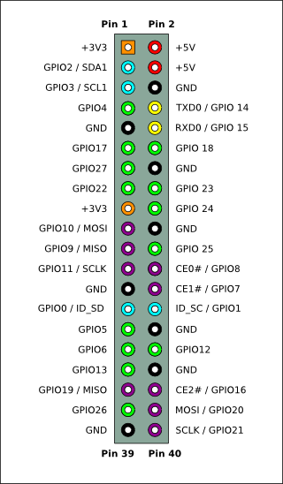

Eine Woche mit dem Raspberry Pi¶
Gute alte Betriebssystemkonzepte in Verbindung mit hardwarenaher Programmierung - das ist das Zentrum dieses Kurses.
Das Raspberry Pi wurde von der gleichnamigen Foundation zu dem Zweck ins Leben gerufen, Kindern wieder Spass an produktivem Basteln näherzubringen - statt reine Spielekonsumenten zu sein. Das Ziel wurde erreicht, und zwar nicht nur für Kinder, wie eine nicht enden wollende Liste an Projekten zeigt.
Das Projekt “Raspberry Pi” hat das erstemal einer breiteren Öffentlichkeit gezeigt, dass Linux mehr drauf hat als nur Server, Handy, und Desktop - es kann auch mit beliebiger Hardware. Das Vorhandensein der Basisinfrastruktur wie Filesystem, Multitasking, TCP/IP und vielem anderem macht es zu einer hervorragenden Alternative zu “gestandenen” Embedded-Betriebssystemen.
Zielpublikum¶
Embeddedprogrammierer, die sich schon länger fragen, warum Features eines “normalen” Betriebssystems, wie z.B. Multiprocessing, TCP/IP, Dateisysteme, ihnen versagt bleiben oder teuer erkauft werden müssen.
Elektroniker, die Devices testen wollen, bevor in ihrer Firma die Hostsoftware soweit ist.
Architekten, die ihre Plattformzusammensetzung entscheiden und rechtfertigen müssen. Die Frage “Wieviel Logik stecke ich in externe Hardware, und muss ich das überhaupt?” ist schwer zu beantworten.
Die Teilnehmer sind eingeladen, eigenes Equipment - Lötmaterial, Breadboard, etc. - mitzubringen. Werkzeug und Material ist reichlich vorhanden, jedoch macht es mit dem eigenen wahrscheinlich mehr Spass.
Kursinhalt¶
Linux und die Commandline. Linux ist ein Desktopbetriebssystem. Unter anderem - es ist alles nur eine Frage des vorhandenen Speichers. Das Rasperry ist für Embedded-Verhältnisse mit 512MB reichlich ausgestattet. Ein Desktop ist trotzdem nur mühsam zu betreiben - und ist für ein Embedded-Produktivsystem ohnehin unangebracht. Zurück an die Unix-Anfänge also …
Remote Login mit SSH
Grundlegendes: die Shell, Werkzeuge wie
sed,grep,find…Diagnose mit Tools wie
netstat,top, den Filesystemenprocfsundsysfs…
Python Grundlagen. Obwohl der Kursinhalt sprachunabhängig ist, brauchen wir für das weitere Vorgehen eine Programmiersprache. Die Raspberry Foundation, die unter anderem das Ziel verfolgt, Kinder weg vom reinen Computerspielen zurück zum spielerischen Programmieren zu führen, wählt zu Recht Python als die Sprache, das zu erreichen.
Das General Purpose IO (GPIO) Subsystem.
Output: Schalten von Ausgängen
Input: Abfragen von Eingängen (sowohl über dummes Polling als auch über intelligentes ereignisgesteuertes Programmieren bzw. Interrupts)
Mit Mikrocontrollern sprechen. Aufgaben wie z.B. Temperaturmessung, IO-Port Expandierung, Pulse Width Modulation (PWM) etc. werden gerne an externe Hardware ausgelagert, die über dedizierte Protokolle angesteuert wird. Hier wird ein Überblick über die Protokolle und über verschiedene Aspekte der Integration in Linux gegeben. Stichworte:
Inter Integrated Circuit (I2C)
Serial Peripheral Interface (SPI)
LM-Sensors Subsystem
CAN-Bus ist ein Netzwerkprotokoll (Controller Area Network), das zur Kommunikation zwischen Mikrocontrollern verwendet wird - zum Beispiel im Auto. In Linux hat sich eine sehr nette Infrastruktur entwickelt, die das Protokoll nahtlos in den Netzwerkstack einpasst.
Empfohlene Vorkenntnisse¶
Etwas Programmiererfahrung
Etwas Hardwareerfahrung